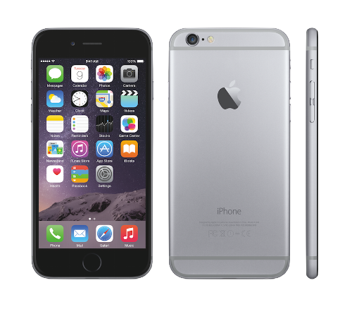

iPhone 6 $200.00+ (with contract)
Summary The iPhone 6 is the new flagship for Apple in 2014, but is it worth your hard earned cash? We will be going over the design and hardware of the phone, along with software and user friendliness, to determine if the iphone 6 is worth its price.
Design The first thing that comes into your mind about the iPhone 6 is the bigger screen. The reason that Apple chose to do this, was because bigger screens were catching on, and Apple was losing customers to Android, because the Android phones have a better design and bigger screen. This inspired Apple to put bigger screen sizes on their new phones, while keeping their great secure software. The iPhone is quite thin (0.27 inches, 6.9mm) and metallic. When you touch the phone it feels good in your hand, but you will be afraid that it will slip from your hand because of its matte feel. You will probably want to get a case for peace of mind and protection. The iPhone also has a big bezel at the bottom of the screen, which looks good, but takes up a lot of room. Another neat thing is that the power button moves from the top of the phone to the side of the phone for easier reach due to the bigger screen size. And the bigger phone is still comfortable to hold in your hand. Overall Apple did a pretty good job on the design of the phone. It is a whole new design, while maintaining that special Apple touch, that makes an iPhone, an iPhone.
Software and Hardware The iPhone 6’s ios 8 software is not that much different than ios 7, and ios 8 is still available on the iPhone 4s, iPhone 5, iPhone 5c, and iPhone 5s. The only thing that makes the iPhone 6 so different is the 4.7 inch screen. The pixel density has not been upgraded that much, so it is still pretty low resolution. The iPhone 6 has a 1334 x 750 resolution, which makes it have a disappointing pixel density of 326 ppi. This is pretty low compared to a lot of the Android phones that have more that 400 pixels per inch! The good thing is that the screen still has amazing picture quality. The iPhone 6 has an all new A8 (dual core 1.4ghz) processor, and an M8 motion coprocessor. They also include 1gb of ram. What is good about the software on the iPhones, is that it is powerful, yet simple. This is one thing Apple has always been good at doing with their phones, and even their laptops. It is hard to explain the feel of ios in words, you just have to use the phone to get a feel of the interface. One thing that Apple has never really had with their software is the ability to customize it to your preferences. This doesn't really change with ios 8. the only thing you can really customize is your lock screen and home screen background. Overall Apple did a very good with the software on the iPhone 6. It is very simple to use and the software. Software has been the strongest part of Apple's phones. It is the reason that they sell so well (considering the hardware is not very powerful).
Ease of Use The iphone 6 is very easy to use, whenever I have a problem with it, it always is easy to resolve on my own and I don't need any help. It is hard to think of something that is difficult to do on an iPhone, thats what makes it so special. If you are good with technology the software will be a piece of cake, and you will never have problems. If you are not so good with technology, you still will be able to use the iphone.
Conclusion The iPhone 6 is a great phone, especially for people that love Apple's software and have always wanted a bigger screen. The hardware will get slower over time, as the software keeps getting updated. If I could rate this phone on a scale from 1 to 10, I would give it a 8.7.
Photography: If you're really good with photography, and you need an awesome phone to show off to your friends, the LG G3 is made for you! The LG G3 has a laser camera which allows you to take HD pictures on the spot! Say you're on a roller coaster and you want a picture at the exact moment; don't worry. Just go to camera and tap the screen! It doesn't take time to focus because the laser camera can get HD focused pictures immediately.
Audio: The G3 also comes with an awesome feature called audio zoom, that most phones don't have. The Audio Zoom feature allows you to zoom in wherever there is sound. This would be perfect for the furtive ninjas! If you want to hear a conversation about a yard away use the audio zoom. You can hear any conversation from very long distances!
Specs: The LG G3 can have as much memory as up to 64GB! and even 32GB! Whatever suits your fancy. The LCD resolution of the G3 is 2560 x 1440. The size of the screen is 5.5 inches.The phone comes in Gold and Titan Gray. Also comes in Black. The phone services are AT&T, Sprint, T-Mobile, Verizon, Best buy and US Cellular. The G3's resolution can go up to 1080p.
Security: The G3 has advanced security so no one can go into your phone and go through your texts. You can enable a secret password for your G3. When the screen is turned off you can tap random places on your screen to unlock the phone!
Usful things: The G3 also comes with an awesome and useful Quick Circle Case. You can double-tap on the Quick Circle to see the time, weather and open up little apps to keep track of your things. This feature is called Knock-On. Lastly, a lot of people might be asking how do you take screen shots. Well, on the back of the phone there is a total of 3 buttons. The volume up button the volume down button and the power button. Press the Power and Volume-Down button at the same time to take a screenshot. You can also take a screenshot by using Quick Memo.
Conclusion:In conclusion, the LG G3 is a very good phone! It can make the best present for holidays or a perfect personal phone! Stay tuned to Techwhale News and Reviews if you want to learn more about the G3's awesome tips!